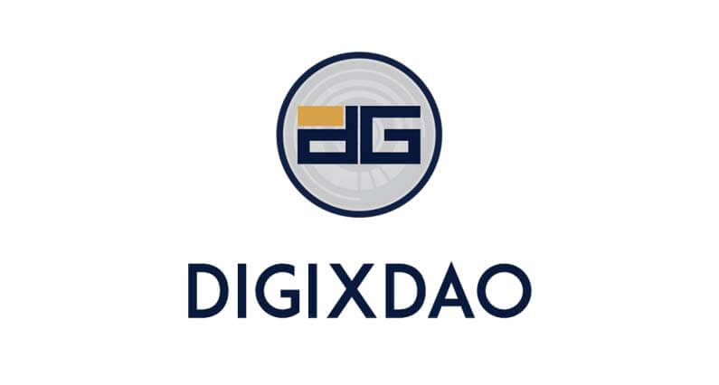

Mi az a DigixDAO? Útmutató kezdőknek
DigixDAO egy olyan kriptovalutát szeretne létrehozni amely mögött igazi arany rudak állnak. DigixDAO a Digix Decentralized Autonomous Organization, egy decentralizált csoport amelyben minden DGD token tulajdonos részt vesz a Digix Global Ecosystem fejlesztői döntéseiben. A DGD tokeneket Ethereum hálózat első sikeres ICO-ban lehetett megvásárolni.
A DGD token birtokosai a DigixDAO-hoz benyújtott javaslatokkal kapcsolatos döntéshozatalban részt vehetnek. Jutalomként a szavazásért és döntéshozatalért DGD birtokosok jutalmat kapnak DGX token formájában amely 1 gramm aranyat jelképez. Az arany tokennel való jelképezésének célja, hogy stabilitást és értékmegtartást hozzon a kriptovaluta világába. Bitcoin-ra gyakran utalnak mint digitális aranyra, azonban ebben a cikkben megnézzük, DigixDAO hogyan digitalizálja a tényleges fizikai aranyat.
Egy megosztott autonóm szervezet (Decentralized Autonomous Organization) koncepciója nem újdonság és sajnos nincs a legjobb hírneve. Köszönhető ez az Ethereum blokkláncon történt DAO hack-nek amely miatt ketté is szakadt az Ethereum közösség. DigixDAO az első sikeres DAO az Ethereum blokkláncon. 5.5 millió dollárt gyűjtöttek egy decentralizált jövőért és, hogy bemutassanak egy új stabil kriptovalutát. Ez elég ambiciózus projekt, de jelentős előrelépést tettek meg a kezdetek óta.
Digix Gold Token
DigixDAO első feladata egy új stabil valuta bevezetése volt. Ezek a Digix Gold Tokenek (DGX) értéket képviselnek a blokkláncon amelyek megőrzik értéküket az idő folyásával. Ez a token kompatibilis Ethereum okos szerződésekkel, és DGX idővel fizetőeszközként lesz használható NFC ( Near Field Communications) technológia használatával. DGX jövőbeli arany standardként van reklámozva az Ethereum ökoszisztémán belül. DGX tokenek valamikor 2018 első negyedévének végén kerülnek kibocsátásra.
Minden DGX token 1 gramm 99.99% tisztaságú aranyat jelképez, amelyet egy biztonságos széfben tárolnak Szingapúrban. Felhasználóknak lehetőségük van, hogy beváltsák DGX tokenjeiket fizikai aranyra, 100DGX token 100 gramm aranyért. Ezt megtehetik személyesen vagy postai úton. Bárki aki egy viszonylag stabil digitális érték eszközt szeretne DGX-t mindenképpen megéri figyelembe venni.
DigixDAO token
Másik token a DigixDAO token (DGD), amely lehetővé teszi a birtokosoknak, hogy negyedévente jutalomban részesüljenek a begyűjtött DGX tranzakciós díjakon keresztül. DGD birtokosok ugyancsak szavazhatnak DigixDAO pénzügyi elosztásáról, valamint menedzselési döntéseket hozhatnak bármilyen a DigixDAO-nak benyújtott javaslatokról. DGD nem stabil token, úgy mint a DGX token lesz. DigixDAO irányítási modellje még alapos tervezésen és fejlesztésen megy keresztül.
Token készletek
Összesen 2 millió DGD token van aminek 15%-a a fejlesztőké. Azonban ha a DigixDAO-nak szüksége van több tokenre, és a résztvevők többsége úgy dönt, akkor létrehozhatnak és értékesíthetnek több DGD tokent.
DGX tokenek készlete az arany szükséglettől és a széf méretétől függ. Az első Digix széf 2 milliárd dollár értékű aranyat képes tárolni. Szóval ha az új DGX arany standard népszerű lesz akkor mindenképpen bővíteniük kell a széfek számát.
Ha DGX token sikeres lesz, akkor tervben van több token létrehozása amelyek ezüstöt és más értékes nemesfémet jelképeznének.
A DGX tranzakciós díjak 0.13%-a és a raktárdíjak 1/3-a megy jutalomként a DigixDAO birtokosainak. Ha legalább a DGD token birtokosainak 80%-a a DAO likvidálására szavaz, akkor DGX token tulajdonosokat megtérítik arany rudakban, hagyományos valutában vagy kriptovalutában.
Harmadik fél általi ellenőrzés
Egy megbízható könyvvizsgáló a Inspectorate Bureau Veritas auditálja negyedévente az aranykészletet. Inspectorate Bureau Veritas vezető szerepet tölt be tesztelés, vizsgálat és tanúsítvány szolgáltatásokban.
DGD vásárlása és tárolása
Legegyszerűbb módja ha először Bitcoin-t vagy Ethereum-ot vásárolsz Coinbase vagy BitPanda-án. Ezután többek között Binance vagy Huobi segítségével cserélheted Bitcoin-t DGD-re. Bitcoin vagy Ethereum beszerzése után Binance és Bitfinex oldalon részletes útmutatót találsz kriptopénz vásárlással kapcsolatban.
DGD egy ERC20 Ethereum alapú token ennek megfelelően Ethereum tárcákon lehet tárolni mint MyEtherWallet és Mist
Záró gondolatok
Mint minden blokklánccal kapcsolatos projekttel még sok tennivaló van a DigixDAO csapat előtt. Mindenképpen érdekes lesz látni, hogyan fejlődnek az elkövetkező hónapokban. Egy aranyhoz kötött kriptovaluta nem csak stabilitást hozhat de más nemesfémek digitalizálását is lehetővé teheti a jövőben.


2018. Március 06.